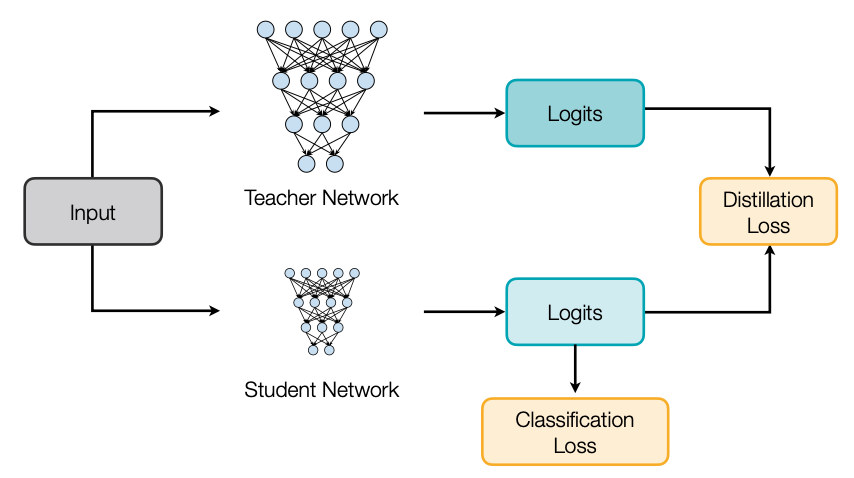
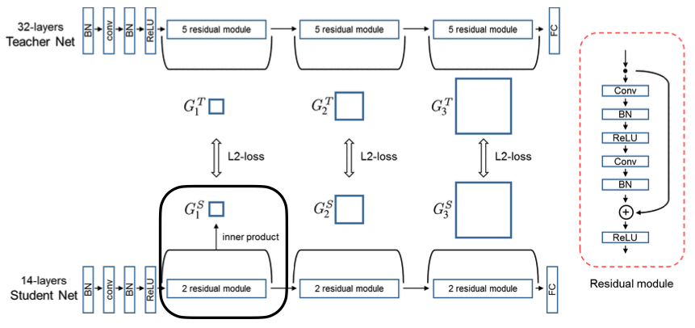
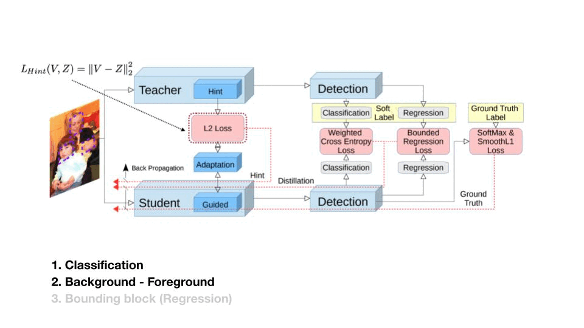
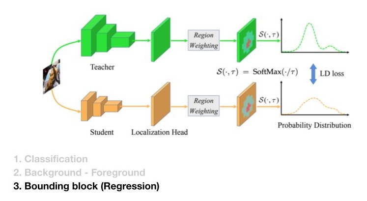
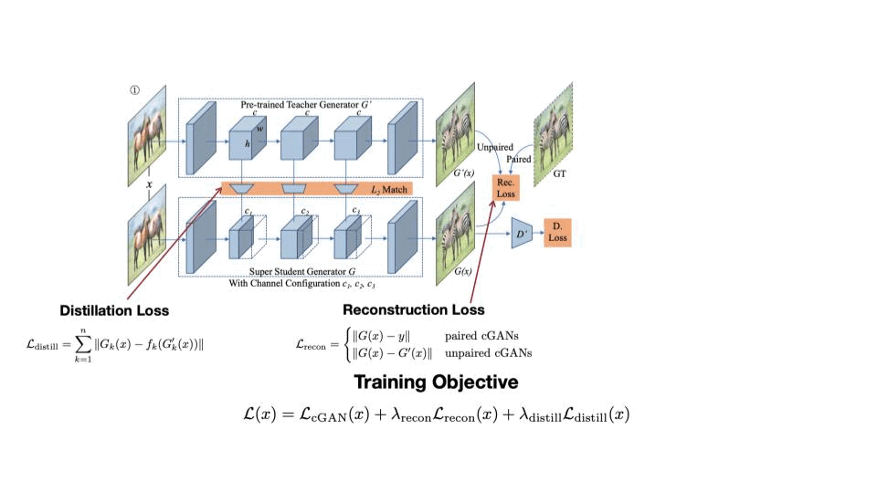
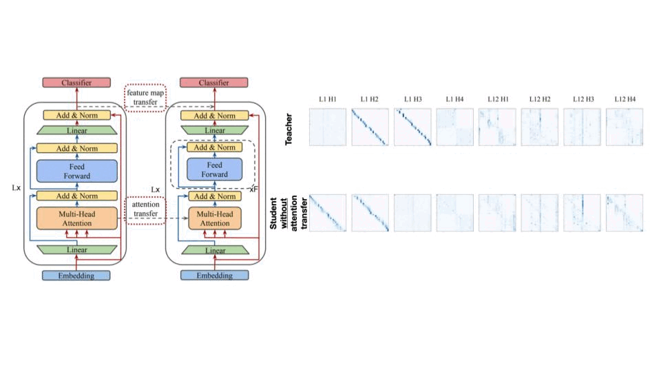

🧑🏫 Lecture 9
이번 시간은 Knowledge Distillation 기법에 대해서 이야기 해볼까 해요. 지금까지 작은 크기의 모델을 만드는 방법에 대해서 알아봤지만, 여전히 작은 모델은 성능적으로 부족한 점이 많죠. 성능을 개선시키는 다른 방법에 대해서 고민하다가 “크기가 큰 모델을 이용해보자.” 에서 나온 아이디어가 바로 Knowledge Distillation 입니다.
1. What is Knowledge Distillation?
Knowledge Distillation은 간단하게 Teach Network라고 불리는 크기가 큰 모델이 있어요. 이 Teacher Network가 먼저 Training을 합니다. 그런 다음 오늘의 주인공 Student Network로 불리는 크기가 작은 모델이 있죠. 이 모델은 두 가지 방식으로 학습을 하는데, 첫 번째는 기존에 학습하던 대로 Target 데이터로부터 학습이 있구요. 다른 한 가지는 Teacher Network를 따라가는 학습이 있습니다.

- The goal of knowledge distillation is to align the class probability distributions from teacher and student networks.
그럼 궁금한 점이 Teacher Network에 어떤 점을 배워야할까요? 강의에서는 총 6개로 Output logit, Intermediate weight, Intermediate feature, Gradient, Sparsity pattern, Relational information으로 나눠서 설명합니다. 설명하기에 앞서서 개념하나 소개하고 넘어갈께요.

만약 위 Teacher Network가 학습한 결과(T=1)로 고양이 사진일 확률 0.982, 강아지 사진일 확률이 0.017이라고 합시다. 그럼 Student Network는 Output logit을 학습한다고 가정하면, 이 두 확률을 따라 갈겁니다. 하지만 Student Network에 따라 이 수치까지 학습하기 어려울 수 있습니다. 이 때 “Temperature(T)”이라는 개념을 들여와 Teacher Network의 Cat과 Dog에 대한 확률을 좀 더 Smooth하게 만들죠.
\[ p(z_i,T) = \dfrac{exp(z_j/T)}{\sum_j exp(z_j/T)} \]
식으로 쓰면 위와 같이 될텐데, 보통은 1로 두고 한다고 강의에서 언급합니다. 왜 설명했냐구요? 혹시나 개념이 나오면 이해하시기 편하시라구요🙂 그럼, Teacher Network에서 어떤 부분을 Student Network에 학습시킬지 알아보시죠.
2. What to match between Teacher and Student Network?
2.1 Output logits
첫 번째는 Output logit입니다. loss로는 대표적으로 Cross entropy loss와 L2 loss가 있겠죠.

2.2 Intermediate weights
두 번째는 Layer마다 Weight입니다. 하지만 Student Model은 Weight dimesion이 다를 수 밖에 없는데, 그럼 Linear Transformation을 이용해서 Dimension을 맞춰 학습하면 되겠네요.


스터디 중에 나온 질문이 “그럼 Student Network에서 추가적인 레이어가 생기는데, 작게 만드는 의미가 없지 않느냐?” 였습니다. 제 생각은 Weight Dimension을 맞추기 위한 Linear Transformation을 위한 레이어는 추론시 사용하지 않을 수 있으니, Student Network의 성능을 높이기 더 제격아닐까요? 마치 추론 때 필요한 부품만 조립하듯 말이죠.
2.3 Intermediate features
세 번째는 Feature 입니다. 이전 경우가 Weight라고 하면, 이번은 Layer의 Output입니다. Teach Network과 Student Network의 Feature를 같게 학습시키는 방법은 여러가지가 있는데, 여기서는 Cosine of angle로 학습을 시키는 방법(Like What You Like: Knowledge Distill via Neuron Selectivity Transfer [Huang and Wang, arXiv 2017]) 과 Dimension을 줄여서 학습을 시키는 방법(Paraphrasing Complex Network: Network Compression via Factor Transfer [Kim et al., NeurIPS 2018])을 소개합니다.


- The paraphraser shrinks the output teacher feature map from m dimensions to m x k dimensions (called factor typically k=0.5) and then expands the dimensionality back to m.
- The output of paraphraser is supervised with a reconstruction loss against the original m-dimensional output.
- Student uses one layer of MLP to obtain a factor with the same dimensionality of m x k.
- FT minimizes the distance between teacher and student factors.
2.4 Gradients
네 번째는 Gradient 입니다. Gradient를 시각적으로 볼 수 있는 방법에는 Attention Map이 있는데요, 이 Attention Map은 이미지에서 특징적인 부분을 잡아낼 수 있죠.
- Reference: Paying More Attention to Attention: Improving the Performance of Convolutional Neural Networks via Attention Transfer [Zagoruyko and Komodakis, ICLR 2017]
- Gradients of feature maps are used to characterize attention of DNNs
- The attention of a CNN feature map \(x\) is defined as \(\dfrac{\partial L}{\partial x}\), where \(L\) is the learning objective.
- Intuition: If \(\dfrac{\partial L}{\partial x_{i,j}}\) is large, a small perturbation at \(i,j\) will significantly impact the final output. As a result, the network is putting more attention on position \(i, j\)

아래 그림은 “Attention Map이 모델의 성능이 높다면 비슷한 패턴으로 나온다.” 는 예시로 나옵니다. Resnet34와 ResNet101의 Attention Map은 유사하게 보이는 반면 NIN인 경우는 많이 다른 것을 확인 할 수 있습니다.
Performant models have similar attention maps
Attention makes of performant ImageNet models (ResNets) are indeed similar to each other, but the less performant model(NIN) has quite different attention maps

Reference. MIT-TinyML-lecture10-Knowledge-Distillation in https://efficientml.ai
2.5 Sparsity patterns
다섯 번째는 Sparsity Pattern 입니다. Layer마다 Output Acitivation을 같게 만드는 방법인데, Intermediate Feature와 유사하게 보이네요.

Intuition: the teacher and student networks should have similar sparsity patterns after the ReLU activation. A neuron is activated after ReLU if its value is larger than 0, denoted by the indicator function \(\rho(x) = 1 [x>0]\).
We want to minimize \(\mathscr{L}(I) = \lvert\lvert \rho(T(I))-\rho(S(I)) \lvert\lvert_1\), where \(S\) and \(T\) corresponds to student and teacher networks, respectively
2.6.1 Relational information: Different Layers
마지막으로 모델내에서 나오는 텐서의 상호 연관성에 대해서도 같게 할 수 있다는 방법 두 가지가 나옵니다. 첫 번째는 각 레이어의 입력, 출력 텐서를 Inner product 하게 되면 하나의 Matrix를 얻을 수 있는데, 이 Matrix를 같게 학습시킨다는 아이디어죠.

Use inner product to extract relational information (a matrix of shape \(C_{in} \times C_{out}\), reduction on the spatial dimensions) for both student and teacher networks. *Note: the student and teacher networks only differ in number of layers, not number of channels
Then match the resulting dot products between teacher and student networks \((G_1^T, G_1^S)\)
2.6.1 Relational information: Different Samples
두 번째는 이전까지 저희는 학습데이터 하나하나마다 나오는 결과를 Teach와 Student를 같게끔 학습시켰는데, 이번엔 여러 학습데이터에서 나온 여러 Output을 하나의 Matrix 형태로 닮게 만드는 방법입니다.
- Conventional KD focuses on matching features / logins for one input. Relation KD looks at the relations between intermediate features from multiple inputs.

Relation between different samples

Reference. Relational Knowledge Distillation [Park et al., CVPR 2019]
지금까지 Student Network가 Teacher Network의 어떤 Output을 가지고 학습시킬지에 대해서 알아봤습니다. 그런데 저희가 TinyML을 하는 목적은 사실 “더 작은 네트워크를 사용해보자.” 이지 않았나요? 즉, Teacher Network없이 Student Network만으로는 할 수 있는 방법이 없을까요? 이런 생각에서 나온 아이디어가 Self and Online Distillation 입니다.
3. Self and Online Distillation
- What is the disadvantage of fixed large teachers? Does it have to be the case that we need a fixed large teacher in KD?
3.1 Self Distillation
첫 번째 Self Distillation은 구조가 같은 네트워크를 계속해서 복사해 나갑니다. 그러면서 이전에 학습한 네트워크로 부터도 복사된 네트워크가 학습할 수 있도록 하며, k개 만큼 복사하며 학습한 후에 최종 Output으로는 복사한 네트워크들의 Output을 Ensemble한 결과를 이용하죠. 여기서 Accuracy는 k번째로 갈수록 늘어나겠죠?

Born-Again Networks generalizes defensive distillation by adding iterative training states and using both classification objective and distillation objective in subsequent stages.
Network architecture \(T = S_1=S_2=\dots=S_k\)
Network accuracy \(T < S_1 < S_2 < \dots < S_k\)
Can alteratively ensemble \(T,S_1, S_2, \dots, S_k\) to get even better performance
3.2 Online Distillation
두 번째는 Online Distillation인데, 여기 아이디어는 “같은 네트워크 구조를 쓰자.” 입니다. 그리고 Teacher network과 Student network는 처음부타 같이 학습하는데, Loss에 한 가지 항이 추가되죠. 바로 “KL Divergence” 입니다.

Idea: for both teach and student networks, we want to add a distillation objective that minimizes the output distribution of the other party.
\(\mathscr{L}(S) = CrossEntropy(S(I), y)+KL(S(I), T(I))\)
\(\mathscr{L}(T) = CrossEntropy(T(I), y)+KL(S(I), T(I))\)
It is not necessary to retrain \(T\) and \(S=T\) is allowed

Reference. Deep Mutual Learning [Zhang et al., CVPR 2018]
3.3 Combined Distillation
마지막은 Self 와 Online Distillation을 합친 연구들을 소개할게요.
첫 번째는 On-the-Fly Native Ensemble 입니다. 구조를 보시면 Branch 마다 모델의 구조도 동일하게 Branch 0, Branch 1, … , Branch m 으로 나뉘는 게 Self Distillation를 보는 듯하죠. 그리고 각 Branch를 학습시 동시에 진행하는 것으로 보이네요.

Idea: generating multiple output probability distributions and ensemble them as the target distribution for knowledge distillation.
Similar to DML(Deep Mutual Learning), ONE allows the teacher model to be exactly the same as the student model, and it does not require retraining the teach network first. It is also not necessary to train two models as in DML.
Result

Reference. Knowledge Distillation by On-the-Fly Native Ensemble [Lan et al., NeurlPS 2018]
두 번째 연구는 Be Your Own Teacher 라는 연구인데, 여기서는 각 레이어마다 나온 Feature map에 추가적인 레이어를 붙여서 Self Distillation의 방법을 이용합니다. Loss로는 Cross entropy(Output Logit), 추가적으로 붙여서 만든 각 모델마다 KL Divergence, 그리고 intermediate feature를 사용하네요. 흥미로웠던 점은 첫 번째, 두 번째 레이어에서는 성능이 거의 나오지 않을 것 같았는데 두 번째 레이어부터는 Ensemble까지 어느정도 성능이 나오는 것을 결과에서 볼 수 있어요.

Use deeper layers to distill shallower layers.
Intuition: Labels at later stages are more reliable, so the authors use them to supervise the predictions from the previous stages.
Result

Reference. Be Your Own Teacher: Improve the Performance of Convolutional Neural Networks via Self Distillation [Zhang et al., ICCV 2019]
4. Distillation for different tasks
이렇게 알아본 Knowledge Distillation은 어떤 Application에 사용될 수 있을까요? 강의는 Object Detection, Semantic Segmentation, GAN, Transformer 모델로 나눠서 이야기합니다. 각 부분마다 어떤 문제를 해결하는지 혹은 어떤 아이디어를 사용했는지만 짚고 넘어가볼게요(자세한 내용은 논문을 참조!).
4.1 Object Detection
Object Detection은 세 가지로 해결해야할 문제가 늘어났습니다. 하나는 Classification, 그동안 해왔던 부분이구요, 다른 두 개는 Background와 Foreground을 구분하는 것과 Bounding block 문제 입니다.

이 연구는 Classifcation과 Background, Foreground 문제를 위해 세 가지 Loss를 사용합니다. 하나는 Feature, 그리고 Output Logit에서 Background, Foreground를 각각 다른 Weight를 준 Cross Entropy, 마지막은 Bounded 한 Regression Loss 입니다.

그럼 Bounding block 은 어떻게 해결할까요? 이 논문에서는 X축과 Y축으로 6개로 나눠진 구역에서 두 점으로 bounding block을 잡습니다. 이렇게 잡은 Bounding block의 분포를 Student Network가 학습하는 겁니다.

4.2 Semantic Segmentation
두 번째 Task인 Semantic Segmentation에서는 Feature와 Output Logit에서 Pixel 단위로 Loss를 구한 다는 점, 그리고 Discriminator 모델을 가지고 학습을 시킨다는 점이 더해졌습니다.

4.3 GAN
세번째 Task는 GAN 입니다. 매 Task 마다 feature map을 KD-loss로 가져가고 기존에 Output Logit은 동일하게 가져가네요. 추가로 해당 연구에서는 각 레이어마다 채널 수 중 성능이 가장 좋은 케이스에 한해 Fine-Tuning을 진행한다는 점이 있습니다.

4.4 Transformer
마지막은 Transformer 모델에서 Knowledge Distillation 입니다. Transformer는 Feature Map, Attention Map을 안 볼 수가 없는데요, 아래 그림에서 보면 attention transfer를 하고 하지 않은 경우하고 확실히 Teacher와 Attention map가 비교가 되네요.

5. Network Augmentation, a training technique for tiny machine learning models.
지금까지 Task에 대해서 살펴봤는데요, 그럼 Tiny Model도 overfitting 문제가 있지 않을까요? 그레서 overfitting을 해결하는 방법에는 Data Augmentation이 있습니다. 아래 그림 처럼 Cutoff, Mixup, AutoAugment, Dropout과 같은 방법들이 있습니다.


하지만 Data Augmentation을 적용한 Tiny Model의 성능을 보시면 적용하는 방법마다 떨어지는 것을 확인할 수 있습니다. 그래서 여기서 제안한 아이디어가 “Network Augmentation” 입니다.

- Tiny Neural Network lacks capacity! → NetAug
5.2 Network Augmentation
Network Augmentation은 기존에 디자인한 모델을 가지고 학습을 시킨 후, 원 모델과 각 레이어마다 파라미터를 변경한 모델을 함께 재학습을 시키는 방법입니다. 파라미터를 변경하는 모델같은 경우 이전시간 실습에 있으니 궁금하시면 참고해주세요. 실험결과는 1.3 ~ 1.8 % Tiny 모델이 성능 개선이 이뤄진 것을 볼 수 있어요. 여기서 원 모델(ResNet50)이 Evaluation에서는 이미 가진 데이터로 모델을 충분히 훈련시켰기 때문에 더이상 늘어나지 않는 것도 확인할 수 있겠네요.
Training Process

Reference. Network Augmentation for Tiny Deep Learning [Cai et al., ICLR 2022] \[ \mathscr{L}_{aug} = \mathscr{L}(W_{base}) + \alpha \mathscr{L}([W_{base}, W_{aug}]) \]
- \(\mathscr{L}_{aug}\) = base supervision + \(\alpha \cdot\)auxiliary supervision
Learning Curve

Reference. Network Augmentation for Tiny Deep Learning [Cai et al., ICLR 2022] Result

Reference. Network Augmentation for Tiny Deep Learning [Cai et al., ICLR 2022] Result for Transfer Learning

Reference. Network Augmentation for Tiny Deep Learning [Cai et al., ICLR 2022]
지금까지 Knowledge Distilation의 기법들 그리고 이를 이용한 Appllcation에 대해서 다뤄봤습니다. 다음 시간에는 TinyEngine을 위한 최적화 기법으로 다시 찾아올게요 🙂